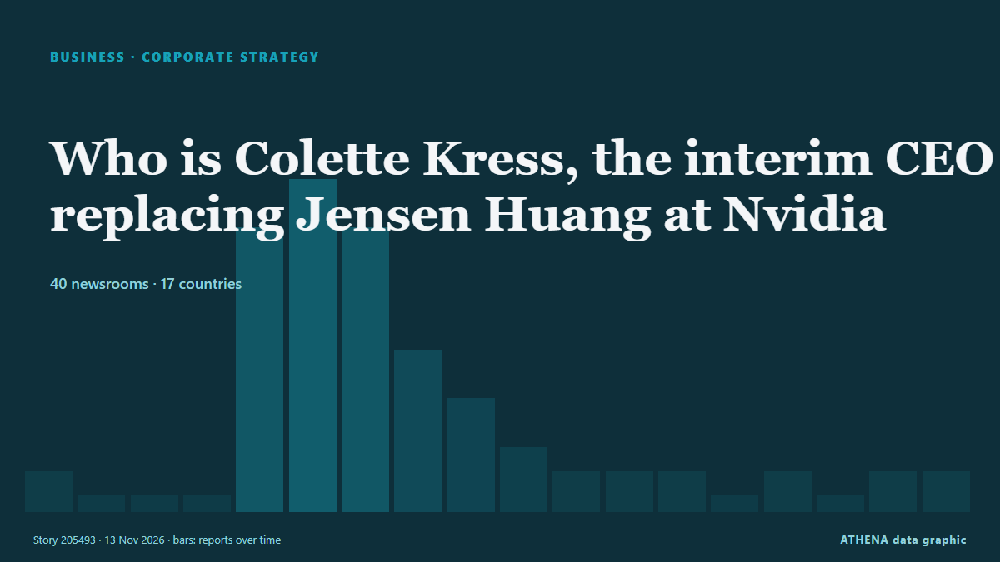

Business, Companies & Investment
SponsoredPresented by  Cybernetics and Artificial Intelligence Lab Welcome to the Cybernetics and Artificial Intelligence Laboratory, established at the Department of Business Administration of the National and Kapodistrian University of Athens. The lab is headed by Professor Dimitrios Thomakos. The lab aims to do research that can be published in top venues. Our research uses tools and methods of Artificial Intelligence, and lies in the following areas: - Forecasting - Decision making - Cyber security - Finance We are always looking forward to collaborating with exceptional students!
Cybernetics and Artificial Intelligence Lab Welcome to the Cybernetics and Artificial Intelligence Laboratory, established at the Department of Business Administration of the National and Kapodistrian University of Athens. The lab is headed by Professor Dimitrios Thomakos. The lab aims to do research that can be published in top venues. Our research uses tools and methods of Artificial Intelligence, and lies in the following areas: - Forecasting - Decision making - Cyber security - Finance We are always looking forward to collaborating with exceptional students!

Corporate strategyWho is Colette Kress, the interim CEO replacing Jensen Huang at Nvidia
Kress joined Nvidia in 2013 as CFO and has regularly appeared on earnings calls with CEO Huang. from Express Tribune
| 31 Oct | 27 |
|---|---|
| 1 Nov | 33 |
| 2 Nov | 116 |
| 3 Nov | 111 |
| 4 Nov | 111 |
| 5 Nov | 111 |
| 6 Nov | 77 |
| 7 Nov | 33 |
| 8 Nov | 58 |
| 9 Nov | 108 |
| 10 Nov | 118 |
| 11 Nov | 95 |
| 12 Nov | 79 |
| 13 Nov | 13 |
Poste Italiane posts best-ever profit for first nine months of year
(ANSA) - ROME, 12 NOV - Poste Italiane said Thursday that it made an adjusted net profit of 1.88 billion euros in the first nine months of this year, having generated income of 629 million euros in… from ANSA English
Canadian co signs MoU with Mari Energies
ISLAMABAD: Ivanhoe Mines signed a memorandum of understanding with Pakistan’s Mari Energies on Thursday, the Canadian company’s chairman Robert Friedland said on the sidelines of the Pakistan… from Business Recorder
ICTSI net income rises 20% in January-September 2026
Manila, Philippines (Ports Europe) November 13, 2026 – ICTSI’s net income rose 20% to €808 million in January-September 2026, but two newly acquired terminals drove most of the 13% rise in container… from Ports Europe
Donald Trump Jr. exits advisory role at prediction market Kalshi
Donald Trump Jr. is no longer a paid adviser for Kalshi, the prediction market company said Thursday. from The Canadian Press (via CityNews)
Nebius signs $12bn in deals for Q3, all deals reportedly cover its capex
Company also notes delays to Microsoft data center project. from Data Center Dynamics
Yogi Adityanath: Bulldozers now UP brand, make them here
Even after mounting criticism, including a Supreme Court judgement, Uttar Pradesh Chief Minister Yogi Adityanath on Thursday described bulldozers as a brand associated with the state. from Deccan Herald
Hapag-Lloyd Q3 2026 profit rises to €860 million
Hamburg, Germany (Ports Europe) November 12, 2026 – Hapag-Lloyd raised its 2026 earnings outlook after Group profit rose to €860 million in the third quarter of 2026, from €138 million in the third… from Ports Europe
Comedian Lucy Beaumont reveals herself as David Walliams whistleblower
"I feel like there’s a window of opportunity to change things" from NME
Alina Habba Mildon loses $50M contract after Trump criticism
Alina Habba Mildon, a former attorney for President Trump, has reportedly been fired from a multimillion-dollar contract with a family company tied to a billionaire banker who recently received a… from The Hill
Congress to call Jensen Huang in to answer for alleged Chinese spy affair
President Donald Trump was briefed about a year ago about those intelligence findings, The New York Times reported. from CNBC World
Iranian, Brazilian presidents emphasize strengthening bilateral cooperation
Tehran, IRNA — Iran's President Masoud Pezeshkian and his Brazilian counterpart, Luiz Inácio Lula da Silva, have emphasized the necessity of leveraging the extensive potential of the two nations to… from IRNA (English)
Finland to allocate over EUR 37M for Ukraine’s reconstruction
Finland’s Ministry for Foreign Affairs is allocating €37.3 million to support Ukraine’s reconstruction under the Strategic Investment and Support for Ukraine (SISU) program. from Ukrinform (English)
EU explores deeper Syria partnership, flags concern over Russia role
BRUSSELS/DAMASCUS, Nov 11 - The European Union is weighing a broad upgrade in ties with Syria, including security sector reform, investment and a revival of a long-frozen trade accord, according to… from The Straits Times
Alex Karp says he's a lifelong Democrat — and Palantir's products are 'essentially progressive'
Palantir CEO Alex Karp told Politico that he's a lifelong Democrat, and that President Donald Trump mishandled immigration. from Business Insider
Mohamed Alabbar teases reveal of new ‘big tower’ in Dubai
The founder and managing director of Emaar Properties said the tower tender will be "held back" until the regional disruption "cools down" from Arabian Business
Thessaloniki Tax Fraud Case: One Defendant Remanded in Custody
Four defendants have been released under restrictive conditions following questioning, while prosecutors allege that a criminal network used shell companies and front managers to defraud the Greek… from To Vima (English)
Wheelock Place renamed Landmark Orchard after Hongkong Land acquisition
The Orchard Road property has been known as Wheelock Place since 1996. from CNA (Channel NewsAsia)
Petrobras Pays Shareholders US$2.7 Billion
Brazil's state oil giant Petrobras will pay shareholders R$15.3 billion (about US$2.7 billion) for the third quarter, 12% below August. from The Rio Times
Greek tax return declarations 2025: Incomes rose by €9.85billionn, two thirds of self-employed workers earning under €10,000
Tax authority figures reveal rising incomes and higher tax bills, with average declared household income reaching €16,808. from ProtoThema English
Asian stocks fragile, Nvidia plummets as board to decide CEO's fate
Analysts believe the Nvidia board will not oust Jensen Huang until they have an all-star successor who is a known entity in the tech sector. from Free Malaysia Today
IBM ends US visa, green card sponsorship for most consulting roles
IBM's move affects most roles in its consulting division, which employs over 150,000 people, as the Trump administration tightens scrutiny of foreign hiring and H-1B visa sponsorship. from Business Standard
HELLENiQ Energy plans investment of over €1bn in Romania by 2030
HELLENiQ ENERGY Holdings plans to invest more than €1 billion in Romania by 2030, expanding its renewable energy and battery storage operations as part of its strategy to strengthen its presence… from Cyprus Mail
QatarEnergy to take 25% of Chevron-operated PEL 82 offshore Namibia
The agreed farm-in would bring QatarEnergy into a Walvis basin exploration license alongside Chevron, which would retain operatorship with a reduced 55% stake on completion. from World Oil
Maldives president reaffirms ban on Israeli passport holders entering country
Mohamed Muizzu says proposed immigration law would maintain unconditional ban, regardless of developments in Gaza. from Anadolu Agency (English)
Art Bros About to Get More Insufferable as Artnet Partners With Kalshi
Under new private equity ownership, Artnet will “curate” art-market wagers for the controversial prediction platform. from Hyperallergic
Botswana Eyes De Beers Tech Dividend
President Duma Boko says Botswana’s planned increase in De Beers ownership is as much a technology play as a diamond investment BONGANI MALUNGA President Duma Boko has positioned Botswana’s proposed… from The Botswana Gazette
David Jones's receiver reveals list of 19 stores set to close
The retailer, which has 38 stores nationally, was placed in voluntary administration less than a week ago. from ABC News Australia
Oura to buy AI care startup Counsel Health for $625M
Wearable ringmaker Oura is buying AI primary care startup Counsel Health. from Endpoints News
Mother Dairy raises milk prices by ₹2-4 per litre, effective November 12
Mother Dairy, the largest milk supplier in Delhi-NCR, had last raised prices on May 14, 2026. from The Hindu
CoreWeave targets 2028 profitability as AI demand surges
The company reported revenue of US$3.66 billion for the third quarter ended September, up from US$1.37 billion a year earlier. from The Business Times
Sonia Gandhi on love, loss and the convulsive history of Modern India
The astonishing story of Sonia Gandhi, the young woman from a middle-class Italian family who married into the Nehru-Gandhi dynasty, lived through unspeakable tragedy a... from Oman Observer
Taiwan's proposed Amazon Leo network would broaden emergency communications
Taiwan's proposed 2027 government budget would fund a low Earth orbit satellite network using Amazon Leo, adding backup communications for critical sites during disasters and emergencies. from DigiTimes Asia
SOCAR's STAR refinery to expand diesel production capacity in Türkiye
SOCAR-owned STAR Oil Refinery in Türkiye is launching a new investment project worth approximately 6 billion Turkish lira ($120 million) to increase its diesel production capacity by 600,000 tonnes… from AzerNews